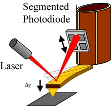
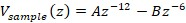
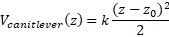
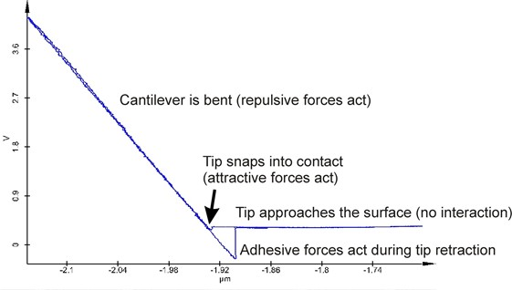
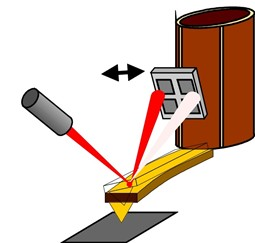

|
理论
|
AFM的工作原理相当简单。探针在样品上扫描，探针与样品之间的各种相互作用被用作反馈机制来追踪表面形貌（图1）。

图1：AFM工作原理。
在悬臂梁（通常长100到200 μm）的自由端安装有尖锐的探针（横跨不到10 nm）。该探针与样品接触，而探针与样品之间的排斥力使悬臂梁弯曲。悬臂梁的弯曲通过高度聚焦的光束偏转系统测量，如图1所示。通过保持悬臂梁的弯曲恒定，在探针扫描表面时施加恒定的力到样品上。WITec显微镜是样品扫描系统，其中悬臂梁保持在恒定位置，样品在其下方精确扫描。这种设置具有固定光束路径的优势，无需追踪光束偏转系统。扫描器的垂直运动跟随表面轮廓，并记录为表面形貌。
多种力通常会导致AFM悬臂梁的弯曲。最常与扫描力显微镜相关联的力是原子间的范德华力。范德华力对探针与样品之间距离的依赖性由Lennard-Jones势 V描述，可写为

。其中 z表示探针样品距离， A 和 B 是相互作用参数。当探针接近表面时，吸引力在排斥力开始占主导地位之前作用于探针和样品之间。在AFM中，探针附着在柔性悬臂梁上，符合胡克定律

，其中 k 是悬臂梁的弹簧常数， z0 是未弯曲悬臂梁的探针-样品距离。该耦合系统的力-距离曲线示例如图2所示。

图2：AFM测量中的力-距离曲线。
这些曲线包含所有探针-样品相互作用，使得在纳米尺度上绘制材料性质图谱成为可能。
表面的不同机械性质可以通过摩擦图像进行评估。在这种情况下，记录的是悬臂梁的扭转。摩擦模式的工作原理如图3所示。

图3：AFM摩擦测量原理。